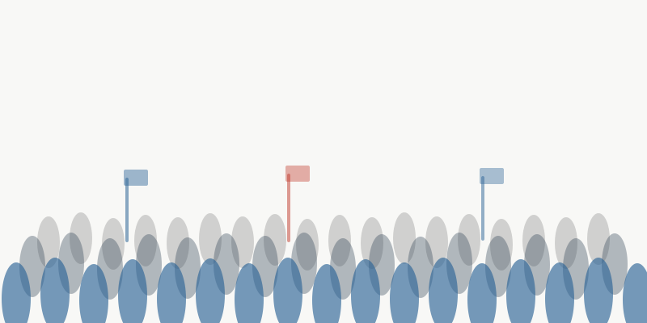

Protest Ongoing
How protest shapes bystanders, local communities, and electoral politics
Previous research on protest frequently focuses on societal impacts — how protests influence elites and policymaking — but much less is known about how protests affect bystanders in exposed communities. Our research focuses exactly on these bystanders: how they perceive protest and how direct exposure in local communities matters.
Approach
- Field experiment: Large-scale randomized field experiment randomly routing pedestrians past or away from demonstrations in Berlin, measuring changes in perceptions, social-norm beliefs, and behavioral intentions.
- Fine-grained local data analysis: Street-level data on PEGIDA rallies (2014–2018) and difference-in-differences and matching methods to estimate impacts on local electoral outcomes and immigration attitudes.
- Historical panel study, fuzzy RDD: Geocoded data on Nazi-era street brawls and panel analyses to assess long-term effects of extremist violence on local political behavior.
- Vignette survey experiment: Comparing reactions to identical protest tactics by farmers versus climate activists to uncover democratic hypocrisy.
Key Findings
- Bystander behavior: Witnessing protests increases bystanders' alignment with protest demands in their actions, even though underlying attitudes remain largely unchanged.
- Electoral spillover: Exposure to PEGIDA rallies leads to significant increases in radical-right vote shares and support for stricter migration controls among mainstream right-leaning voters, while left-leaning voters exhibit a backlash.
- Heterogeneous responses: Effects vary across social identities and prior political orientations — protest exposure can mobilize sympathizers and provoke counter-mobilization among opponents.
- Selective tolerance: Citizens are significantly more willing to endorse undemocratic responses when protests involve climate activists versus farmers engaging in identical tactics.
Publications
- Bischof, D., Bernardi, L., & Wouters, R. (2021). "The Public, the Protester, and the Bill." Journal of European Public Policy.
- Bischof, D., & Fink, C. (2015). "Protest Effects on Electoral Mobilization." Swiss Political Science Review.
Working Papers
- Haas, V. I., et al. (2025). "Does Protest Affect Bystanders? Field Experimental Evidence from Germany."
- Bischof, D., Le Corre Juratic, M., & Wagner, M. (Forthcoming). "Democratic Hypocrisy: Unequal Tolerance for Protest in Germany." Political Science Research & Methods.
- Bischof, D. "Does Exposure to Radical Right Rallies Affect Political Behavior and Preferences? Evidence from the Far Right PEGIDA Movement in Germany." (available upon request)
- Bischof, D. "Can Populist Parties Increase Electoral Turnout? The Case of the M5S Movement in Italy."